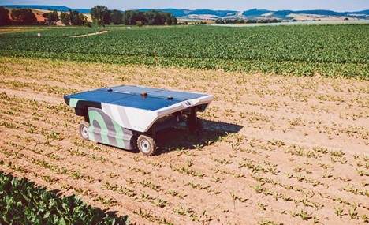

PLATEFORME WEB
J'aimerai être expérimentée dans le domaine du logiciel afin de créer un plateforme web pour aider les étudiants en medecine à mieux organiser leurs révisions .
Pour ce projet j'ai l'ambition de collaborer avec des proffesseurs dans le domaine medical pour avoir accés aux ressources nécéssaires .
Mais également contacter des étudiants en medecine afin de comprendre leurs besoins réels .
Et savoir quels formats de contenus ils préférent (QCM,VIDEO...) .
ROBOTS CHURURGICAUX
Dans le domaine chirurgical ,on note de plus en plus d'erreurs humaines .
Mais la création de robot autonome serait la solution pour mettre fin à ce problème.
On constate déjà l'avancée de la technologie robotique dans le domaine de la chirurgie .
Donc ce projet vise une amélioration pour des résultats optimaux.
Toutefois, la collaboration avec des chirurgiens,reste trés importante pour la réalisation de ce projet.
ROBOTS AGRICOLES

Dans l'agriculture ,le désherbage est une étape trés difficile qui fatigue l'homme et lui prend énormément de temps .
Donc j'ai trouvé une idée géniale qui consiste à créer des robots de désherbage capable de detecter mais également d'arracher eux-mêmes les mauvais herbes .
Ce qui serait trés éfficaces et évitera à l'homme la fatigue mais aussi contribuera au rendement .
Car avec l'utilisation de ces robots ,on assiterait à une diminution de l'utilisation d'engrais.